Magnolia designer: review sheets, 22 Nov
All the pictures sent in the conversation today. Tap a picture to open it full size (and save it). All 9 shoulder sheets as one PDF.
Shoulder layering (preview only, not live)
Each sheet: the real photo on the left, the same photo with the shoulder laid in on the right; the last picture is the shoulder photo it came from.
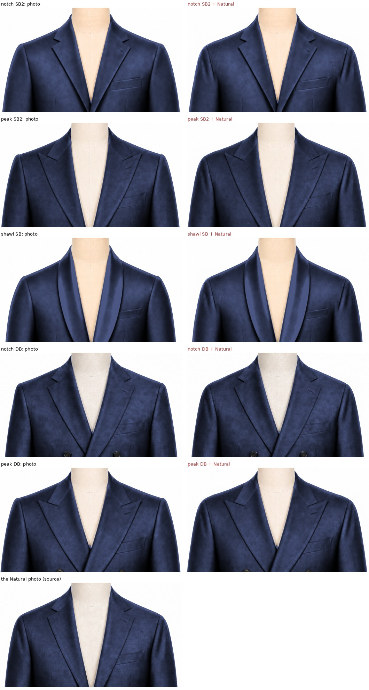
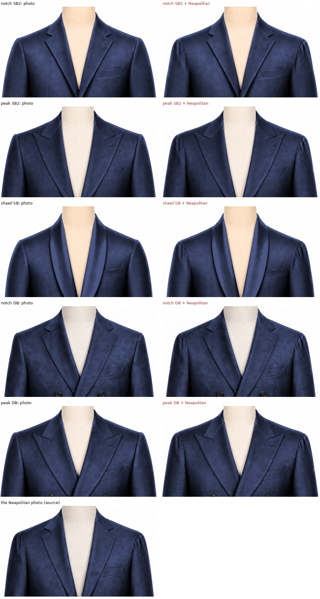
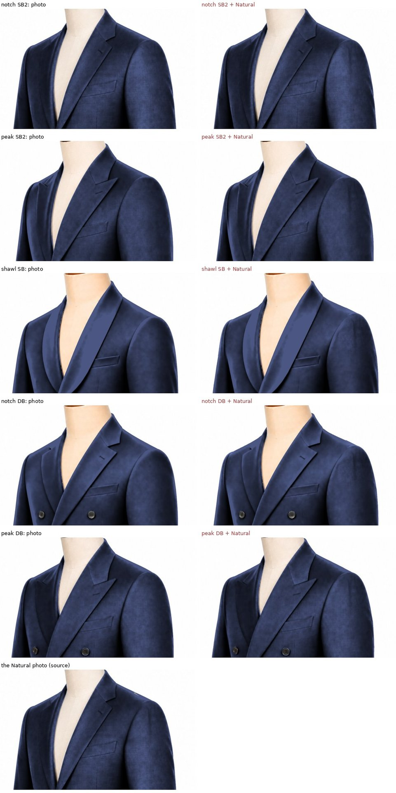
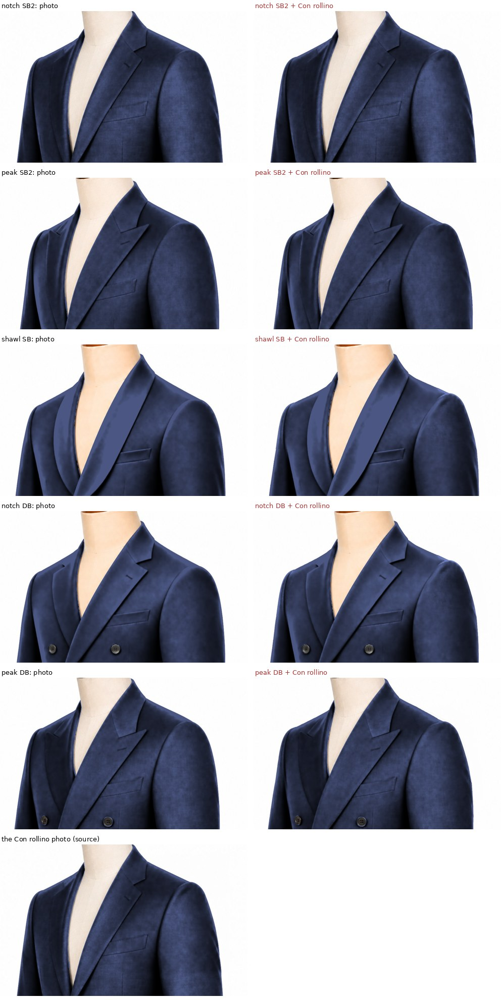
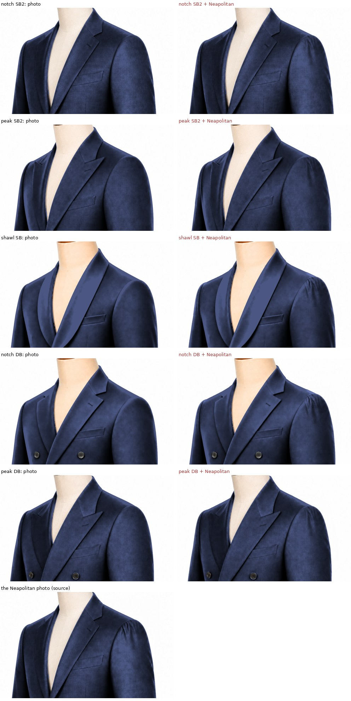
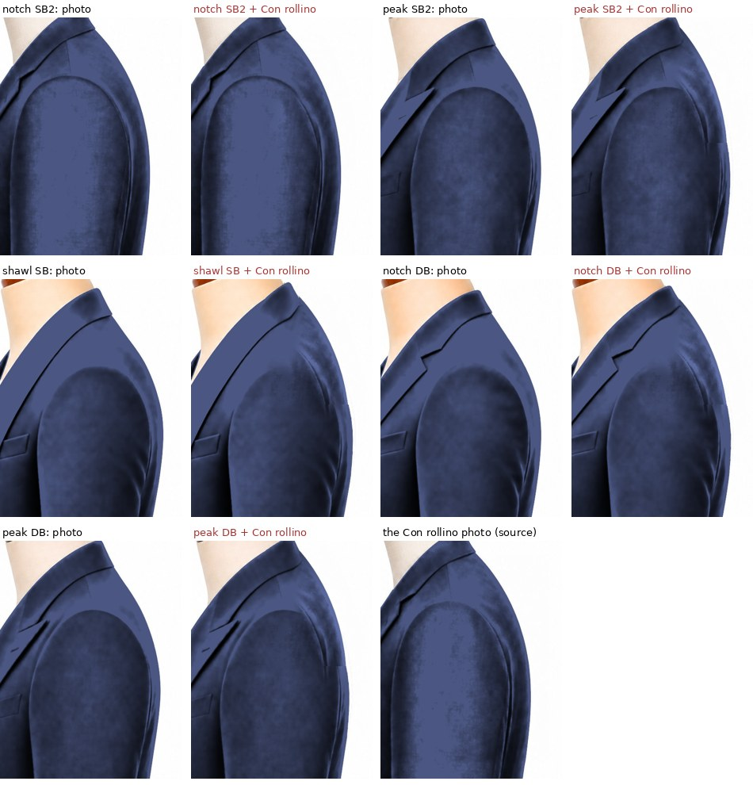
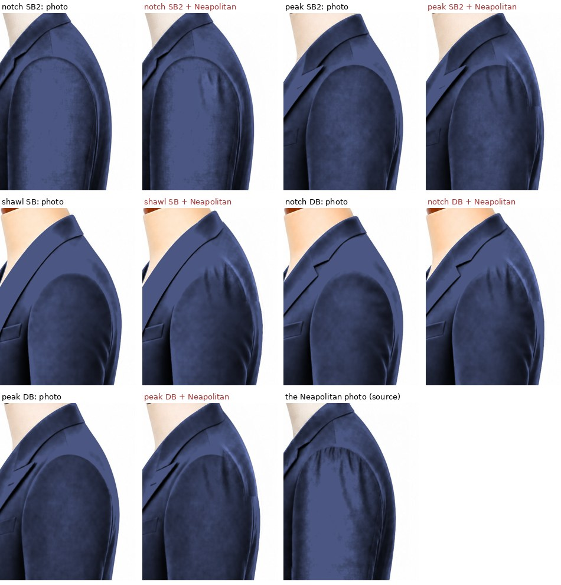
Drawn flap sizes (v84, ?drawn=1 only)
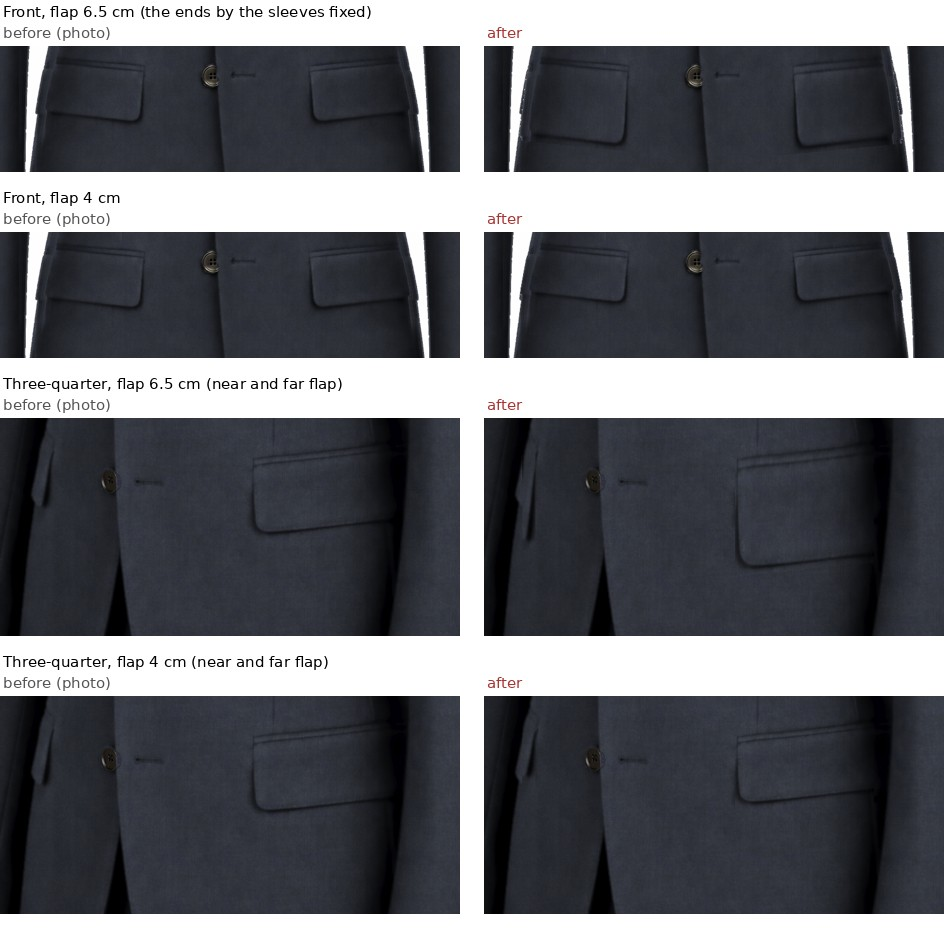
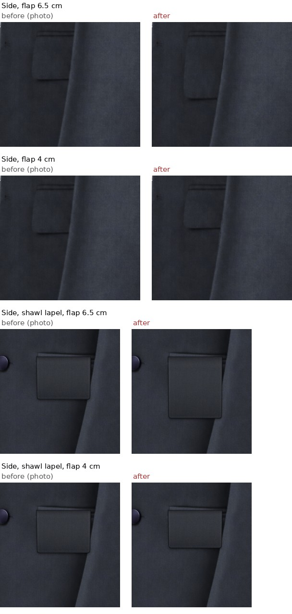
Drawn chest welts (v85, ?drawn=1 only)
Enlarged: a few millimetres is only a few pixels.
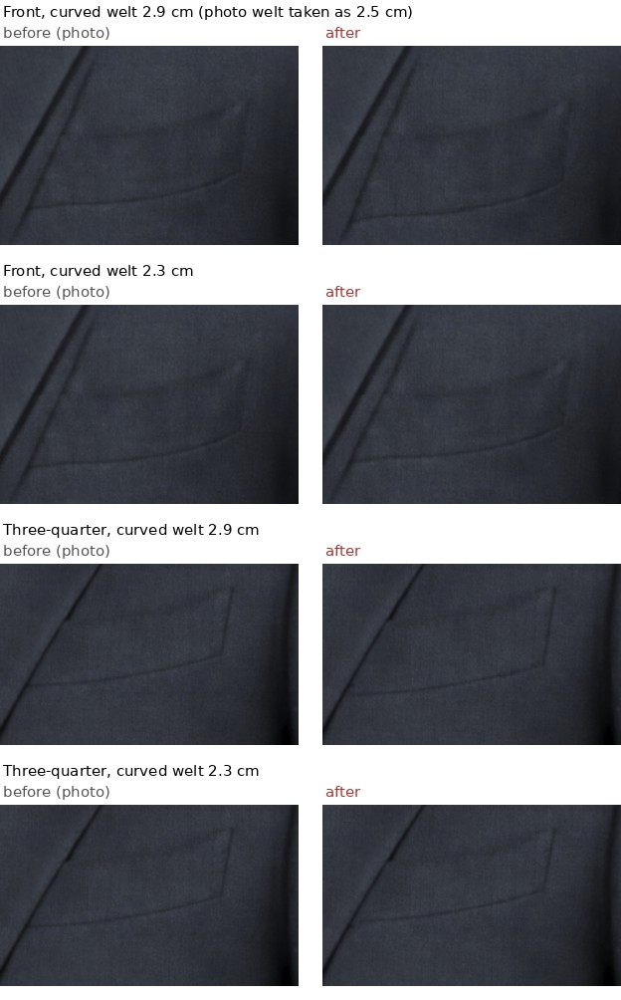
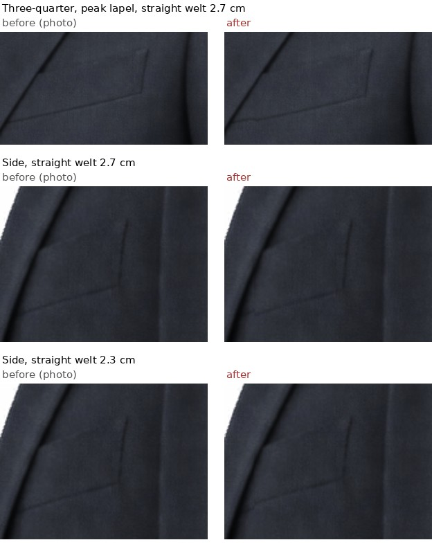
Lapel width on Three-quarter (v86, ?drawn=1 only)
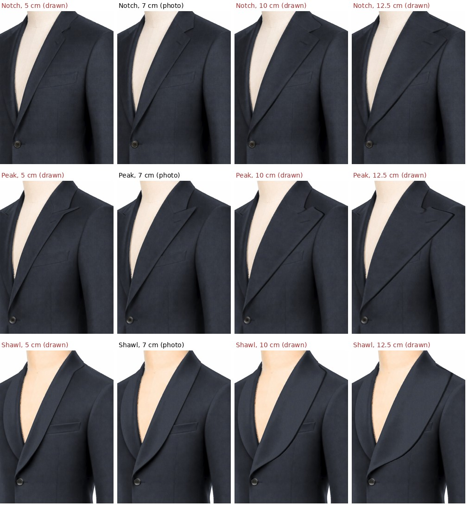
Welt hidden under the widened lapel (v87, ?drawn=1 only)
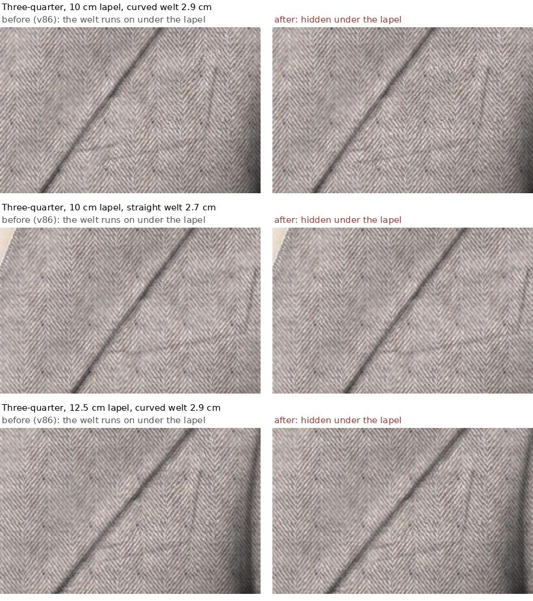